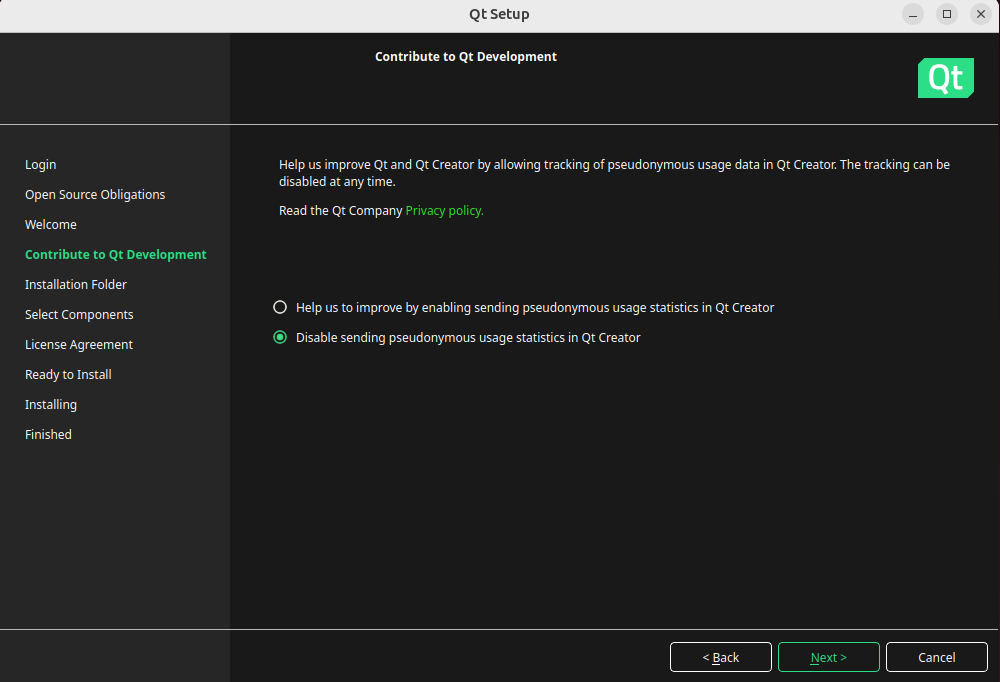

Qt 安装及配置#
Reference#
https://web.stanford.edu/dept/cs_edu/resources/qt/install-linux
https://blog.csdn.net/weixin_45962068/article/details/129851848
1 安装依赖#
Ubuntu版本为24.04 LTS
更新 package manager
sudo apt-get update sudo apt-get upgrade
安装Qt所需要的依赖和工具
sudo apt-get -y install build-essential openssl libssl-dev libssl1.0 libgl1-mesa-dev libqt5x11extras5 '^libxcb.*-dev' libx11-xcb-dev libglu1-mesa-dev libxrender-dev libxi-dev libxkbcommon-dev libxkbcommon-x11-dev
2 安装Qt#
打开ubuntu的浏览器，打开网址 https://www.qt.io/download-qt-installer，选择
Linux x64进行下载，文件会下载到~/Downloads目录下
运行
.run文件cd ~/Downloads chmod +x qt-online-installer-linux-x64-4.8.0.run sudo ./qt-online-installer-linux-x64-4.8.0.run
登录账号
打勾，选择
next
选择
next
打勾，选择
next不用改路径，选择
Qt for desktop development
打勾，选择
next
选择
install
3 配置环境变量#
打开终端，输入以下命令打开环境变量配置文件.
sudo vim /etc/profile
在配置文件最后一行添加以下代码，以个人的qt安装路径为准：
export PATH="/opt/Qt/Tools/QtCreator/bin:$PATH" export PATH="/opt/Qt/6.7.2/gcc_64/bin:$PATH" export LD_LIBRARY_PATH="/opt/Qt/6.7.2/gcc_64/lib:$LD_LIBRARY_PATH" export QT_PLUGIN_PATH="/opt/Qt/6.7.2/gcc_64/plugins:$QT_PLUGIN_PATH" export QML2_IMPORT_PATH="/opt/Qt/6.7.2/gcc_64/qml:$QML2_IMPORT_PATH"
修改成功后，输入以下命令使其生效即可.
sudo -s source /etc/profile